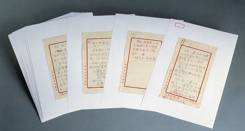

義助慰安婦 —— 李敖百件珍藏義賣藝術品（第93件） 品 名：I6. 胡適演講稿（69 頁） 預估價：69 萬 成交價：（保留） 說 明： 這六十九頁的胡適演講稿，共分成三組，分別為 13、18、38 頁。第一組為「找書的樂趣」。這是胡適先生在演講前所作的草稿，不是放在口袋就是放在手邊，但上台後卻從不看它。我們從這些草稿中看到口才如此好之人，是如何的歸納他的思想。 
這六十九頁的胡適演講稿，共分成三組，分別為 13、18、38 頁。第一組為「找書的樂趣」。這是胡適先生在演講前所作的草稿，不是放在口袋就是放在手邊，但上台後卻從不看它。我們從這些草稿中看到口才如此好之人，是如何的歸納他的思想。